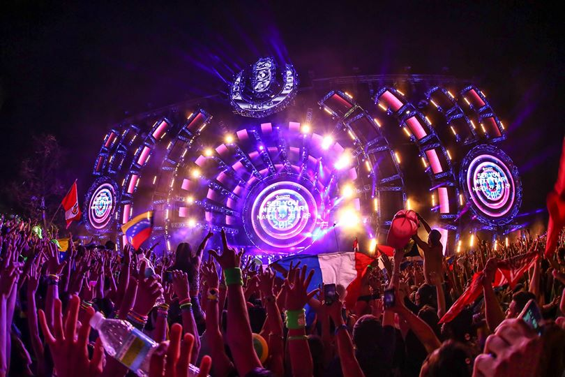
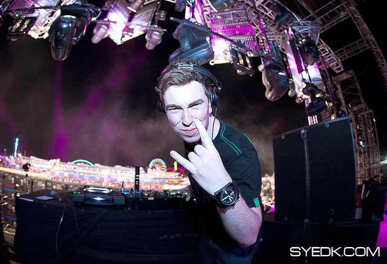
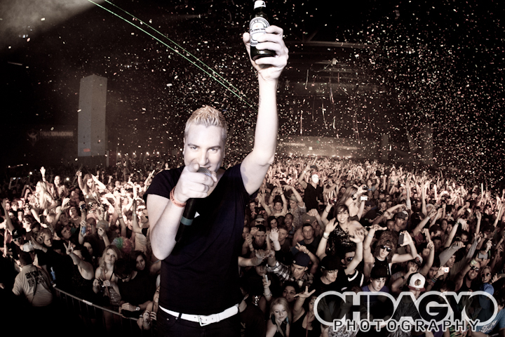
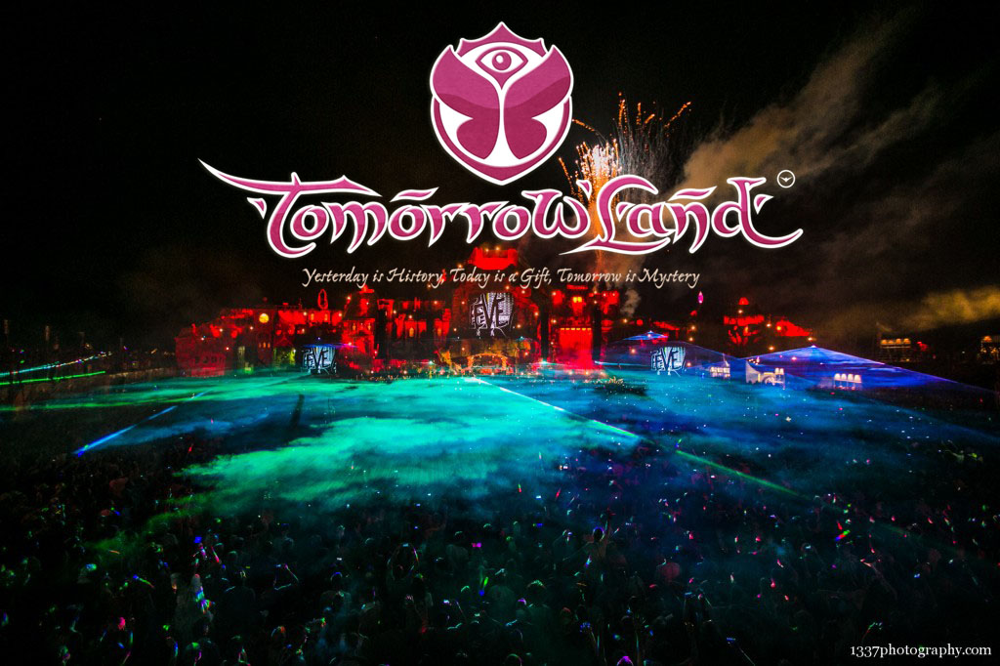
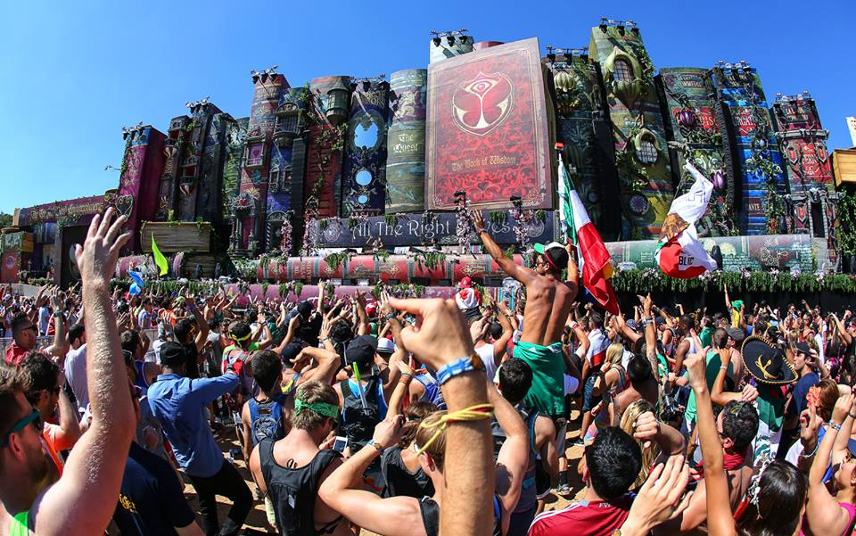

Ultra Music Festival

Ultra Music Festival es un festival de música electrónica al aire libre que se celebra anualmente en marzo y que tiene lugar en la ciudad de Miami, Florida, Estados Unidos. El festival coincide con la anual Winter Music Conference, celebrada también en Miami
El primer Ultra fue un festival de un día desde 1999 hasta 2006, un festival de dos días desde 2007 a 2010, y fue un festival de tres días en 2011 y 2012. En 2012, un récord de 55 mil personas por día asistieron al festival. En 2013, por primera vez en la historia del festival, UMF tuvo lugar en dos fines de semana consecutivos. En 2014, el festival volverá al formato de una semana, que tendrá lugar el viernes, 28 de marzo hasta el domingo 30 de marzo. Las entradas anticipadas salieron a la venta el 21 de mayo 2013 y se agotaron en cuestión de segundos.
El festival tuvo lugar entre el 1999 y 2000 en South Beach (Miami Beach), entre 2001 y 2005 en el Bayfront park (Downtown Miami), entre 2006 y 2011 en el bicentennial park (Downtown Miami) y desde 2012 hasta el presente se realiza de nuevo en el Bayfront park.
Ultra lleva a cabo también sus festivales en Ibiza, España; Buenos Aires, Argentina; São Paulo, Brasil; Santiago, Chile; Seúl, Corea del Sur; Split, Croacia , Hvar, Croacia y Bogotá, Colombia. El festival sigue en vias de expansión alrededor del mundo, y aunque todavía no se ha realizado la página oficial del festival ha anunciado que se realizará el festival en Japón y en Sudáfrica.
EDC

Electric Daisy Carnival (EDC) es un festival de música celebrado en la primavera, verano y otoño meses en los Estados Unidos, Puerto Rico y el Reino Unido a partir de 2013. [1] Fundado por Insomniac Events, el festival ha sido organizado por los lugares en California, Colorado, Florida, Nevada, Nueva Jersey, Nueva York, Texas y Puerto Rico. Originalmente un evento el sur de California, un día, la EDC se extendió a varios lugares en varios estados de junio a agosto. En 2009, el festival se amplió a un evento de dos días. El evento de Las Vegas duró 3 días en 2011 y dibujó un gran total de 230.000 personas durante tres días, [2] y el evento de 2012 atrajo un gran total de 320,000 + personas durante los tres días. A partir de 2013, Electric Daisy Carnival en Las Vegas es el festival de música electrónica más importante del mundo
Zoo Electric Festival

El Zoo Electric Festival es un festival anual de música electrónica celebrada el fin de semana del Día del Trabajo en la ciudad de Nueva York en la isla de Randall. El festival representa todos los géneros de la música electrónica, con lo que los mejores DJs internacionales y actuaciones en directo de varios países junto con los favoritos de la ciudad natal de cuatro etapas.
En su año inaugural 2009, 26.000 personas asistieron a ver a los artistas Armin van Buuren, Deadmau5, David Guetta y Ferry Corsten. En 2011, Electric Zoo expandió a un festival de 3 días y acogió a 85.000 asistentes. Electric Zoo ha recibido International Dance Music Awards nominaciones en 2010, 2011, 2012, y 2013 a la "Mejor Evento de Música", así como la cobertura de prensa de los principales medios de comunicación CNN, New York Times, Huffington post, Village Voice, Time Out New York, New York Post, y el DJ Mag.
Tomorrowland

Tomorrowland es un festival de música electrónica que se realiza en Boom (Bélgica). Está organizado por ID&T y Entertainment and Media Enterprise. La primera edición del festival fue el 14 de agosto de 2005, y los primeros artistas que participaron en el evento fueron Push (M.I.K.E.), Armin Van Buuren, Cor Fijneman, Yves Deruyter, Dj Ghost, Technoboy y Coone.2 Se calcula que anualmente asisten personas de 75 nacionalidades distintas, y más de 450,000 asistentes
El evento más reciente tuvo lugar entre el 26 y 28 de julio del 2013, donde actuaron Dj Malik, Dj Payno, Above & Beyond, Basto, Afrojack, Alesso, Avicii, Carl Cox, Chuckie, David Guetta, Dimitri Vegas & Like Mike, Ferry Corsten, Hardwell, Knife Party, Laidback Luke, RedFoo, Marco Carola, NERVO, Loreen, Nicky Romero, Kylie Minogue, Paul Van Dyk, Sander van Doorn, Showtek, Tiësto, Sidney Samson, Steve Aoki, Axwell, Sebastian Ingrosso, Cristian Dos Anjos (El Portu), Yves V, entre otros.
Tomorrowold

El 18 de febrero de 2013, los organizadores de Tomorrowland anunciaron que un festival derivado apodado "TomorrowWorld" sería realizado entre el 27 y 29 de septiembre de 2013.
El 20 de marzo de 2013, el destino del festival fue anunciado en Twitter. TomorrowWorld será realizado en Chattahoochee Hills, Georgia, Estados Unidos. Fue uno de los festivales más cotizados, hasta estos momentos con gran mayor de simpatizantes a nivel mundial entre ellos jóvenes amantes de la electrónica, se espera mayor número para el año siguiente, y que el número de asistentes se eleve hasta 220,000.
En cuanto a las entradas, las pertenecientes a Tomorrowland se agotaron al poco de ser puestas a la venta online, y se espera conseguir próximamente el mismo resultado con las de TomorrowWorld.
De momento, tanto Tomorrowland como TomorrowWorld, encontrarán DJ's como los tres ex-integrantes de Swedish House Mafia, esto es, Steve Angello, Sebastian Ingrosso y Axwell, además de los ya habituales Dimitri Vegas & Like Mike, Tiësto, Armin Van Buuren, Hardwell, David Guetta, Steve Aoki, Nicky Romero, Fedde Le Grand, Carl Cox, Avicii, Knife Party, Chuckie, Sander van Doorn, Thomas Gold, Zedd, Laidback Luke, Martin Solveig, Afrojack, Alesso,Porter Robinson,Redfoo , Nervo Deniz Koyu, Gina Star, R3hab, Art Departament, Deorro , Borgore, Bro Safari, ƱZ, Will Sparks, Moska, Audien, Ferry Corsten, Kroyclub, Luna, Brennan Heart , Avan Lava, Wolfpack, Dyro, W&W, Alesso, Yves V, AraabMuzik, Style of eye , A-trak, Zomboy, Figure, Danny Avila , An21, Gareth Emery, Digital LAB, Pete Tong, Coone , Ran D, Quintino, MAKJ, Nicky Romero , David Guetta, Dillon Francis, Diplo, Kill paris, Jack Beats, Kill the noise, Cedric Gervais , Maor Levi, Zatox y Le crayón.